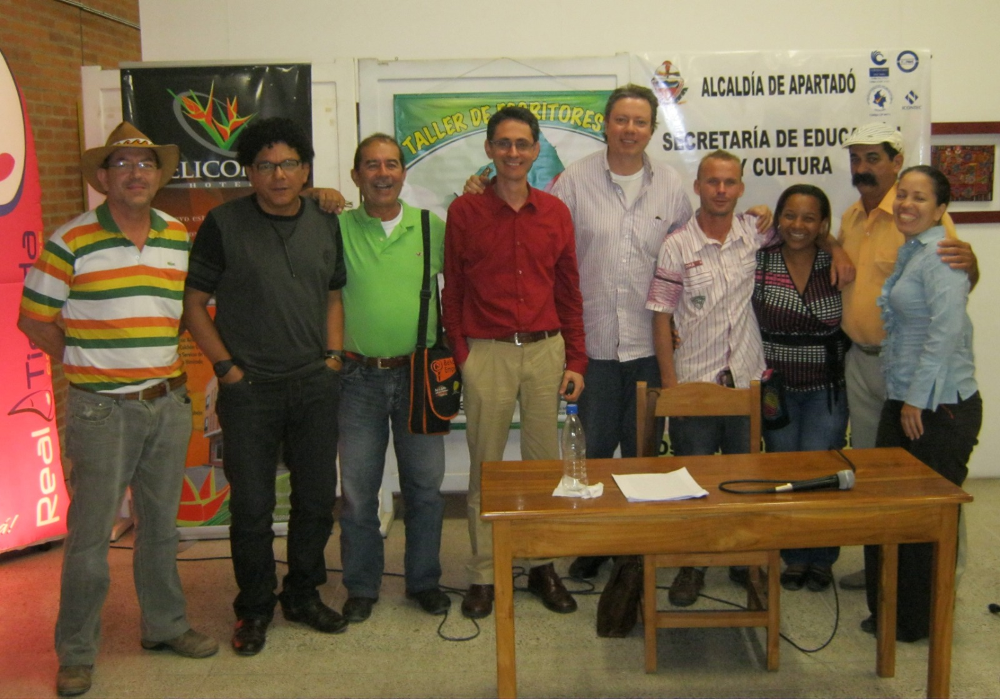
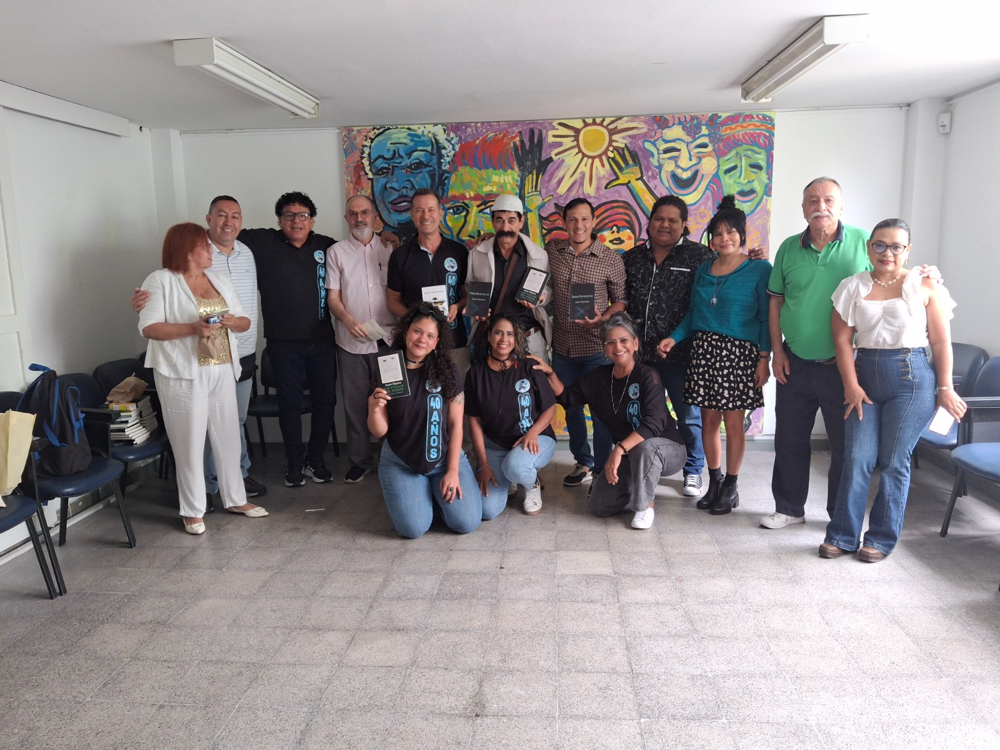
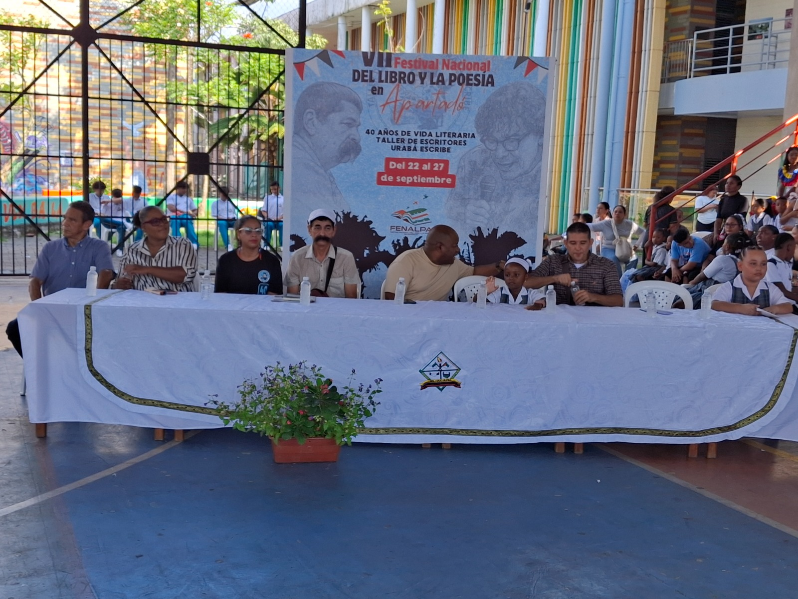
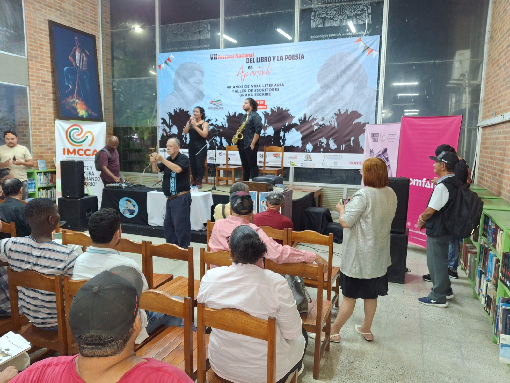

Historia
Urabá Escribe
desde 1985.
Desde Apartadó para Colombia y el mundo.

foto1.jpgLos primeros años
El Taller de Escritores Urabá Escribe nació en Apartadó en 1985 como una tertulia literaria de fin de semana, con encuentros alternados entre buhardillas, patios de casas de los contertulios y la Casa de la Cultura. Muy pronto adquirió forma de taller y publicó su primer libro, Poteas y Pirontes, de Juan Mares (1987), título inaugural de la Colección Urabá Escribe.
Proyección regional
Con el paso del tiempo, su labor trascendió el espacio interno del taller y se proyectó hacia colegios, universidades, revistas y medios regionales. La Red Relata del Ministerio de Cultura lo ha presentado como uno de sus talleres más activos, con ciclos de formación, recitales y lecturas en diálogo con la naturaleza del territorio.


FENALPA y cuarenta años
FENALPA, el Festival Nacional del Libro y la Poesía de Apartadó, alcanzó su séptima edición en 2025 en coincidencia con los cuarenta años del taller. Más que un evento, se ha configurado como un lugar de encuentro entre la palabra y el territorio: escritores, lectores, editores y artistas en torno a la lectura, la oralidad y la creación.
Un proceso cultural vivo
En su trayectoria, Urabá Escribe ha dejado de ser solo un taller para convertirse en un verdadero proceso cultural: ha formado lectores y escritores, ha impulsado la publicación de nuevas voces y ha contribuido a tejer una red de intercambio literario entre Urabá, Antioquia y el país.
